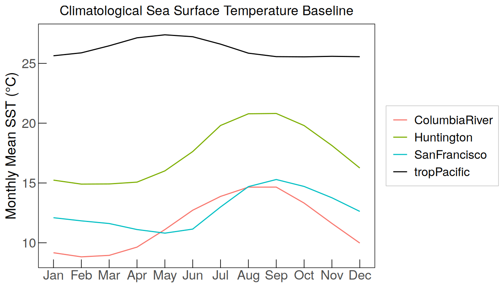
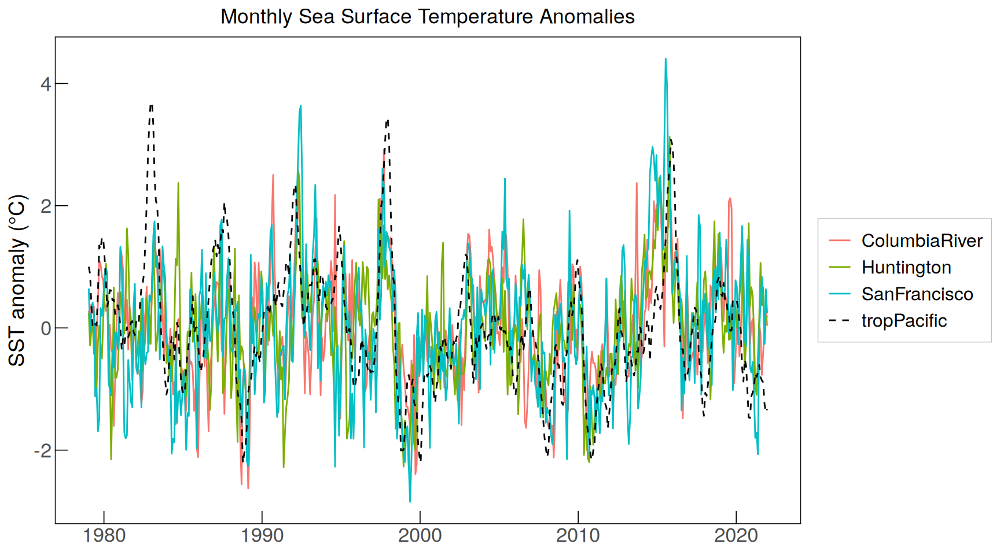
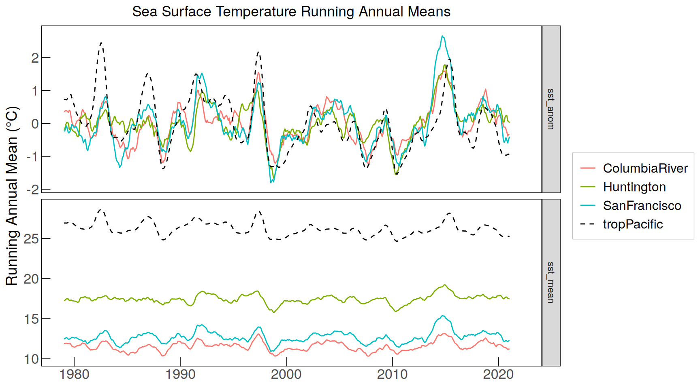
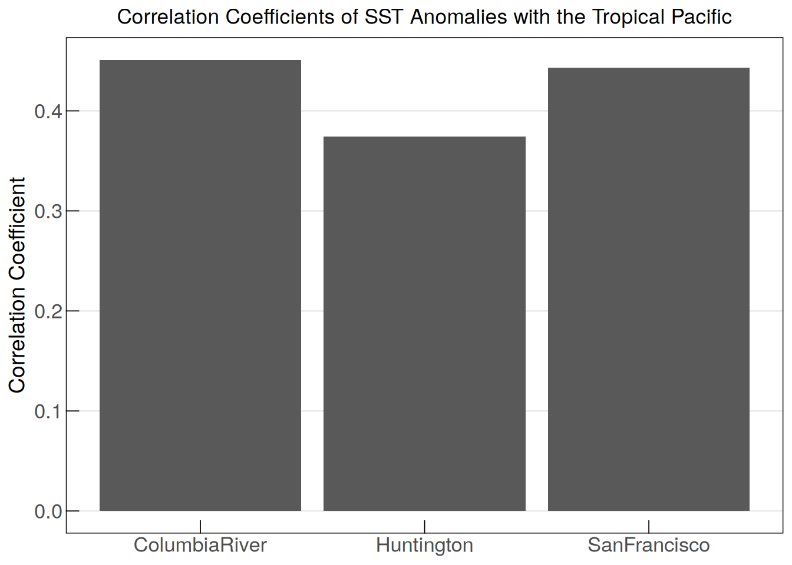
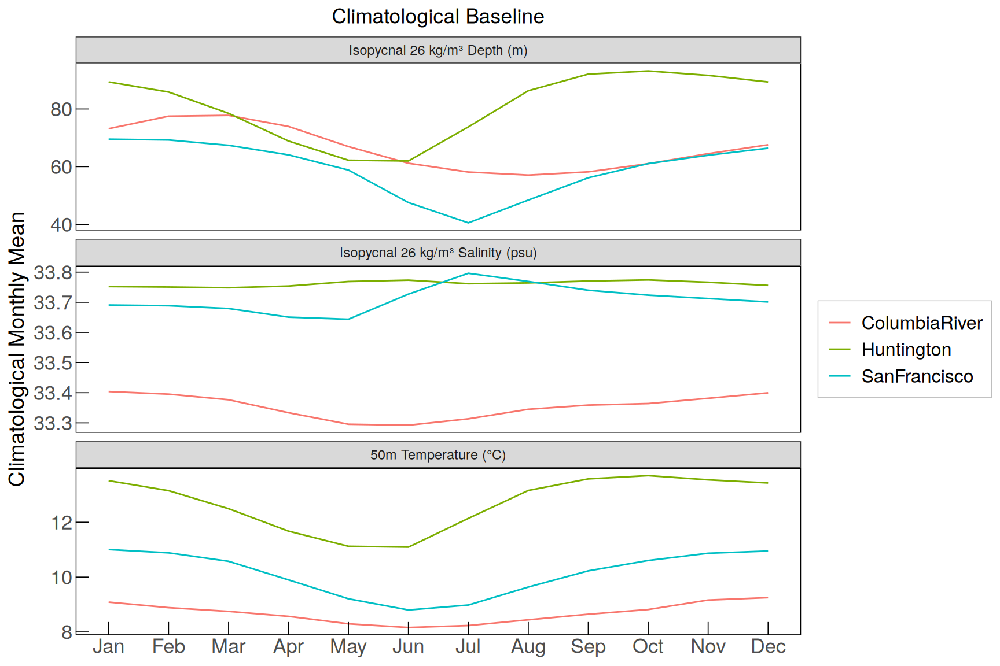
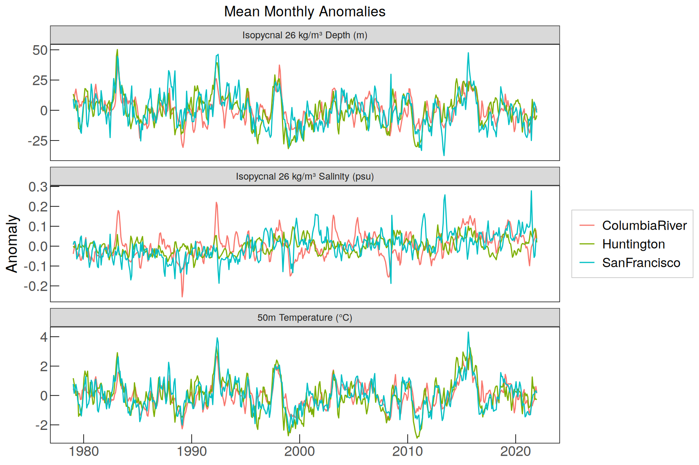
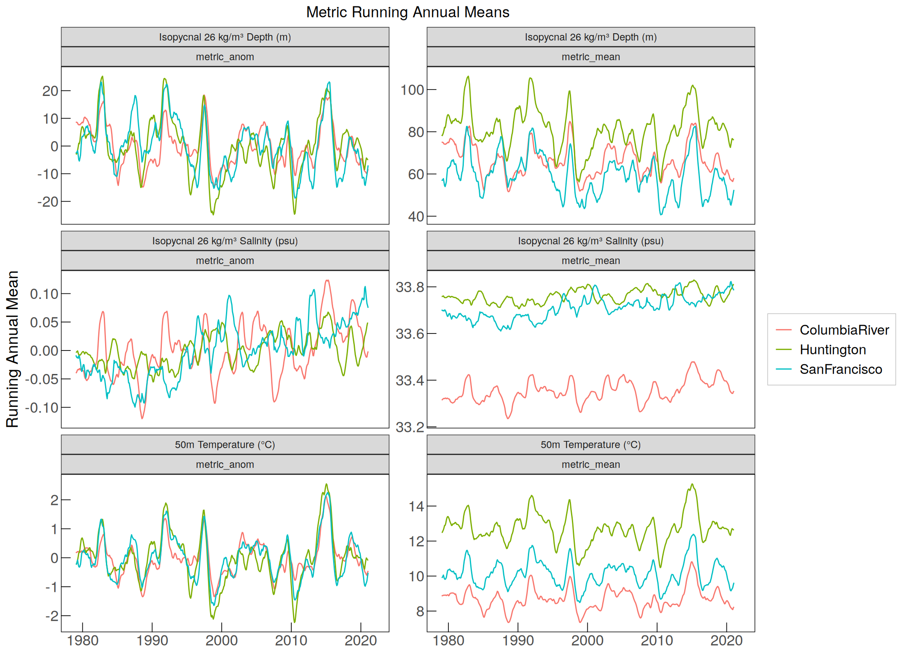
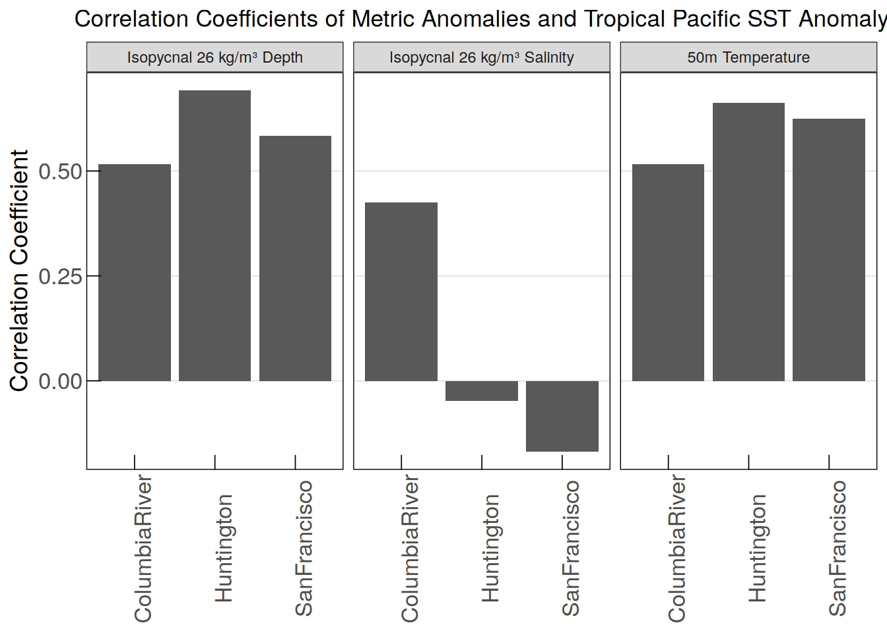

Last updated: 2025-02-03
Checks: 7 0
Knit directory: oae_ccs_roms/
This reproducible R Markdown analysis was created with workflowr (version 1.7.1). The Checks tab describes the reproducibility checks that were applied when the results were created. The Past versions tab lists the development history.
Great! Since the R Markdown file has been committed to the Git repository, you know the exact version of the code that produced these results.
Great job! The global environment was empty. Objects defined in the global environment can affect the analysis in your R Markdown file in unknown ways. For reproduciblity it’s best to always run the code in an empty environment.
The command set.seed(20240919) was run prior to running
the code in the R Markdown file. Setting a seed ensures that any results
that rely on randomness, e.g. subsampling or permutations, are
reproducible.
Great job! Recording the operating system, R version, and package versions is critical for reproducibility.
Nice! There were no cached chunks for this analysis, so you can be confident that you successfully produced the results during this run.
Great job! Using relative paths to the files within your workflowr project makes it easier to run your code on other machines.
Great! You are using Git for version control. Tracking code development and connecting the code version to the results is critical for reproducibility.
The results in this page were generated with repository version 639b38d. See the Past versions tab to see a history of the changes made to the R Markdown and HTML files.
Note that you need to be careful to ensure that all relevant files for
the analysis have been committed to Git prior to generating the results
(you can use wflow_publish or
wflow_git_commit). workflowr only checks the R Markdown
file, but you know if there are other scripts or data files that it
depends on. Below is the status of the Git repository when the results
were generated:
Ignored files:
Ignored: .Rhistory
Ignored: .Rproj.user/
Untracked files:
Untracked: code/read_data.Rmd
Untracked: oae_ccs_roms.Rproj.RData
Unstaged changes:
Modified: analysis/_site.yml
Deleted: analysis/read_data.Rmd
Modified: code/Workflowr_project_managment.R
Modified: code/regrid_cdr_eff_molar.R
Modified: code/regrid_dTA_dDIC.R
Note that any generated files, e.g. HTML, png, CSS, etc., are not included in this status report because it is ok for generated content to have uncommitted changes.
These are the previous versions of the repository in which changes were
made to the R Markdown (analysis/enso_indices.Rmd) and HTML
(docs/enso_indices.html) files. If you’ve configured a
remote Git repository (see ?wflow_git_remote), click on the
hyperlinks in the table below to view the files as they were in that
past version.
| File | Version | Author | Date | Message |
|---|---|---|---|---|
| html | ce19057 | vgfroh | 2025-01-05 | Build site. |
| html | d537ffe | vgfroh | 2024-11-22 | Build site. |
| Rmd | 085eee2 | vgfroh | 2024-11-22 | enso_indices plot edits part 3 |
| html | 3516414 | vgfroh | 2024-11-22 | Build site. |
| Rmd | 2a4bfac | vgfroh | 2024-11-22 | enso_indices plot edits part 2 |
| html | 7c47c0f | vgfroh | 2024-11-22 | Build site. |
| Rmd | e8bd044 | vgfroh | 2024-11-22 | enso_indices update and plot edits |
| Rmd | 1cd6532 | vgfroh | 2024-11-21 | Manually committing updated enso file and file location changes |
| html | c12634a | vgfroh | 2024-11-21 | Build site. |
| Rmd | 163f18c | vgfroh | 2024-11-21 | rebuild after code update and new enso file |
| Rmd | 043c113 | jens-daniel-mueller | 2024-11-18 | rebuild after code review |
| html | 02a42aa | jens-daniel-mueller | 2024-11-18 | Build site. |
| html | 3facddd | jens-daniel-mueller | 2024-11-18 | Build site. |
| html | 2509718 | jens-daniel-mueller | 2024-11-18 | Build site. |
| html | 9508443 | vgfroh | 2024-11-15 | Build site. |
| html | 2c9eb7e | vgfroh | 2024-11-15 | Build site. |
| Rmd | a2b33f0 | vgfroh | 2024-11-15 | Adding full enso indices file, removing just temperature file |
| html | fa48b39 | vgfroh | 2024-11-15 | Build site. |
| Rmd | 0437728 | vgfroh | 2024-11-15 | Adding full enso indices file |
this is the script to open the data
# loading packages
library(ncdf4)
library(stars)
library(tidyverse)
library(lubridate)
library(units)
library(zoo)
# Path to the files:
path_ROMSv2RG_results <-
"/net/sea/work/loher/ROMS/Alk_enh_formatted_2024_08/regrid_2024_10/1979-2009_2/"
#2x2 degree location boxes for each location + TrP 3.4 region:
#Columbia = 45N-47N, 124W-126W
#San Francisco = 36.5N-38.5N, 122.5W-124.5W
#Huntington = 32N-34N, 117W-119W
#Tropical Pacific = 5S-5N, 120W-170W
# saving theme formatting for all plots in this code
custom_theme <- theme_bw() +
theme(axis.text.x = element_text(size = 11),
axis.text.y = element_text(size = 11),
axis.ticks = element_line(linewidth = 0.3, color = "black"),
axis.ticks.length = unit(-0.3, "cm"),
axis.title.x = element_blank() ,
axis.title.y = element_text(size = 12),
plot.title = element_text(hjust = 0.5),
panel.grid.major = element_blank(),
panel.grid.minor = element_blank(),
legend.position = "right",
legend.title = element_blank(),
legend.text = element_text(size = 10),
legend.direction = "vertical",
legend.background = element_rect(color = "grey", linewidth = 0.25),
panel.border = element_rect(color = "black", linewidth = 0.5, fill = NA))
colors <- c("tropPacific" = "black", "ColumbiaRiver" = "#F8766D",
"SanFrancisco" = "#00BFC4", "Huntington" = "#7CAE00")
lines <- c("tropPacific" = "dashed", "ColumbiaRiver" = "solid",
"SanFrancisco" = "solid", "Huntington" = "solid")# 42 year time series of historical monthly averages for all 4 locations
years_past <- 1979:2021
locations <- c("ColumbiaRiver", "SanFrancisco", "Huntington", "tropPacific")
annual_cycles <- list()
annual_monthly_sst_list <- list()
for (i in locations){
# creating the 2x2 degree grid subsets for 3 CCS locations, tropP already set
subset <- if (i == "ColumbiaRiver") {
cbind(start = c(70, 40, 1, 1), count = c(16, 16, 1, 12))
} else if (i == "SanFrancisco") {
cbind(start = c(33, 39, 1, 1), count = c(16, 16, 1, 12))
} else if (i == "Huntington") {
cbind(start = c(50, 44, 1, 1), count = c(16, 16, 1, 12))
} else if (i == "tropPacific") {
cbind(start = c(1, 1, 1, 1), count = c(400, 80, 1, 12))
}
# reading in data for each location into a stars object
annual_cycles[[i]] <- do.call(c, lapply(years_past, function(year)(
read_ncdf(paste0(path_ROMSv2RG_results,
"pactcs30_", year, "_monthly_", i, ".nc"),
ncsub = subset,
var = "temp",
proxy = FALSE
))))
# converting each stars object into a dataframe and cleaning up
annual_cycles[[i]] <- annual_cycles[[i]] %>%
drop_units() %>%
as_tibble %>%
select(-s_rho)
# creating a new data frame with the monthly average over each region
annual_monthly_sst_list[[i]] <- annual_cycles[[i]] %>%
mutate(yr_mon = paste0(format(time, "%Y-%m"), "-15"), yr_mon = ymd(yr_mon)) %>%
group_by(yr_mon) %>%
summarise(sst_mean = mean(temp, na.rm = TRUE)) %>%
ungroup() %>%
mutate(region = i)
}
# rearranging all location lists into a single data frame
annual_monthly_sst <- reduce(annual_monthly_sst_list, bind_rows)
# clearing unneeded objects
rm(annual_cycles, annual_monthly_sst_list)# computing the climatological monthly mean for each location
monthly_mean_baseline <- annual_monthly_sst %>%
mutate(month = format(as.Date(yr_mon), "%m")) %>%
group_by(month, region) %>%
summarise(sst_clim = mean(sst_mean)) %>%
ungroup()
# plot
monthly_mean_baseline %>%
mutate(month = as.numeric(month)) %>%
ggplot(aes(month, sst_clim, col = region)) +
geom_path() +
labs(title = "Climatological Sea Surface Temperature Baseline",
x = "Month", y = "Monthly Mean SST (°C)") +
scale_color_manual(values = colors) +
custom_theme +
scale_x_continuous(breaks = 1:12, labels = month.abb)
# calculate the anomaly for each location/month (time series - base month mean)
annual_monthly_sst <- annual_monthly_sst %>%
mutate(month = format(as.Date(yr_mon), "%m")) %>%
group_by(month, region) %>%
mutate(sst_clim = mean(sst_mean)) %>%
ungroup() %>%
mutate(sst_anom = sst_mean - sst_clim)
# plot anomalies
annual_monthly_sst %>%
ggplot(aes(x = yr_mon, y = sst_anom, color = region, linetype = region)) +
geom_path() +
labs(title = "Monthly Sea Surface Temperature Anomalies",
y = "SST anomaly (°C)") +
scale_color_manual(values = colors) +
scale_linetype_manual(values = lines) +
custom_theme
# Computing running annual mean (mean sst/anom for one year starting each month)
running_annual_mean_sst <- annual_monthly_sst %>%
select(yr_mon, region, sst_mean, sst_anom) %>%
pivot_longer(starts_with("sst")) %>%
group_by(region, name) %>%
mutate(value = rollmean(value, k=12, fill=NA, align = "left")) %>%
ungroup()
# plot both RAMs
running_annual_mean_sst %>%
ggplot(aes(x = yr_mon, y = value, color = region, linetype = region)) +
geom_path() +
labs(title = "Sea Surface Temperature Running Annual Means",
y = "Running Annual Mean (°C)") +
scale_color_manual(values = colors) +
scale_linetype_manual(values = lines) +
facet_grid(name ~ ., scales = "free_y") +
scale_y_continuous(expand = expansion(mult = 0.07)) + # add more space
custom_theme 
# Calculating correlation coefficients for the sst anomalies and plot
annual_monthly_sst %>%
select(yr_mon, region, sst_anom) %>%
pivot_wider(names_from = region,
values_from = sst_anom) %>%
pivot_longer(-c(yr_mon, tropPacific)) %>% #this recombines the indices col
drop_na() %>%
group_by(name) %>% # name is now where the regions are stored
summarise(cor = cor(tropPacific, value)) %>% #value is the indice
ungroup() %>%
ggplot(aes(name, cor)) +
geom_col() +
labs(title =
"Correlation Coefficients of SST Anomalies with the Tropical Pacific",
y = "Correlation Coefficient",
x = "Region") +
custom_theme +
theme(panel.grid.major.y = element_line())
# Loading in time series for temperature at 50m depth
locations_2 <- c("ColumbiaRiver", "SanFrancisco", "Huntington")
annual_cycles <- list()
annual_monthly_t50_list <- list()
for (j in locations_2){
# creating the 2x2 degree grid subsets for 3 CCS locations, tropP already set
subset <- if (j == "ColumbiaRiver") {
cbind(start = c(70, 40, 1), count = c(16, 16, 12))
} else if (j == "SanFrancisco") {
cbind(start = c(33, 39, 1), count = c(16, 16, 12))
} else if (j == "Huntington") {
cbind(start = c(50, 44, 1), count = c(16, 16, 12))
}
# reading in data for each location into a stars object
annual_cycles[[j]] <- do.call(c, lapply(years_past, function(year)(
read_ncdf(paste0(path_ROMSv2RG_results,
"pactcs30_", year, "_monthly_", j, "_50m.nc"),
ncsub = subset,
var = "temp",
proxy = FALSE
))))
# converting each stars object into a dataframe and cleaning up
annual_cycles[[j]] <- annual_cycles[[j]] %>%
drop_units() %>%
as_tibble()
# creating a new data frame with the monthly average over each region
annual_monthly_t50_list[[j]] <- annual_cycles[[j]] %>%
mutate(yr_mon = paste0(format(time, "%Y-%m"), "-15"), yr_mon = ymd(yr_mon)) %>%
group_by(yr_mon) %>%
summarise(t50_mean = mean(temp, na.rm = TRUE)) %>%
ungroup() %>%
mutate(region = j)
}
# rearranging all stored location lists into a single data frame
annual_monthly_t50 <- reduce(annual_monthly_t50_list, bind_rows)
# clearing unneeded objects
rm(annual_cycles, annual_monthly_t50_list)# 42 year time series of historical monthly averages for all 4 locations
annual_cycles <- list()
annual_monthly_iso26_list <- list()
for (j in locations_2){
# creating the 2x2 degree grid subsets for 3 CCS locations, tropP already set
subset <- if (j == "ColumbiaRiver") {
cbind(start = c(70, 40, 1), count = c(16, 16, 12))
} else if (j == "SanFrancisco") {
cbind(start = c(33, 39, 1), count = c(16, 16, 12))
} else if (j == "Huntington") {
cbind(start = c(50, 44, 1), count = c(16, 16, 12))
}
# reading in data for each location into a stars object
annual_cycles[[j]] <- do.call(c, lapply(years_past, function(year)(
read_ncdf(paste0(path_ROMSv2RG_results,
"isopycnal_monthly_", year, "_", j, ".nc"),
ncsub = subset,
var = c("depth_26", "salt_26"),
proxy = FALSE
))))
# converting each stars object into a data frame and cleaning up
annual_cycles[[j]] <- annual_cycles[[j]] %>%
drop_units() %>%
as_tibble()
# Weird values showing up in SF, need to filter out
if (j == "SanFrancisco") {
annual_cycles[[j]] <- annual_cycles[[j]] %>%
filter(depth_26 >= 1, salt_26 >= 1)
}
# creating a new data frame with the monthly average over each region
annual_monthly_iso26_list[[j]] <- annual_cycles[[j]] %>%
mutate(yr_mon = paste0(format(time, "%Y-%m"), "-15"), yr_mon = ymd(yr_mon)) %>%
group_by(yr_mon) %>%
summarise(depth_26_mean = mean(depth_26, na.rm = TRUE),
salt_26_mean = mean(salt_26, na.rm = TRUE)) %>%
ungroup() %>%
mutate(region = j)
}
# rearranging all stored location lists into a single data frame
annual_monthly_iso26 <- reduce(annual_monthly_iso26_list, bind_rows)
# clearing unneeded objects
rm(annual_cycles, annual_monthly_iso26_list)# Joining together the 50m T and iso26 dataframes and reorganizing
enso_metric_monthly <- full_join(annual_monthly_t50, annual_monthly_iso26)
enso_metric_monthly <- enso_metric_monthly %>%
pivot_longer(
cols = c(t50_mean, depth_26_mean, salt_26_mean),
names_to = "metric",
values_to = "metric_mean",
names_transform = list(metric = ~ case_when(
. == "t50_mean" ~ "t50",
. == "depth_26_mean" ~ "depth26",
. == "salt_26_mean" ~ "salt26"
))
)
# computing the climatological monthly mean for each metric at each location
monthly_mean_baseline <- enso_metric_monthly %>%
mutate(month = format(as.Date(yr_mon), "%m")) %>%
group_by(month, region, metric) %>%
summarise(metric_clim = mean(metric_mean)) %>%
ungroup()
# plot (still want to update/change this later)
monthly_mean_baseline %>%
mutate(month = as.numeric(month)) %>%
ggplot(aes(x = month, y = metric_clim, color = region)) +
geom_path() +
labs(title = "Climatological Baseline",
x = "Month", y = "Climatological Monthly Mean") +
scale_color_manual(values = colors) +
facet_wrap(
~ metric, scales = "free_y", ncol = 1,
labeller = labeller(
metric = c(
"t50" = "50m Temperature (°C)",
"depth26" = "Isopycnal 26 kg/m³ Depth (m)",
"salt26" = "Isopycnal 26 kg/m³ Salinity (psu)"))) +
custom_theme +
scale_x_continuous(breaks = 1:12, labels = month.abb)
# Calculating anomaly index values
enso_metric_monthly <- enso_metric_monthly %>%
mutate(month = format(as.Date(yr_mon), "%m")) %>%
group_by(month, region, metric) %>%
mutate(metric_clim = mean(metric_mean)) %>%
ungroup() %>%
mutate(metric_anom = metric_mean - metric_clim)
# plot (want to do more with this and add in tropP sst later)
enso_metric_monthly %>%
ggplot(aes(x = yr_mon, y = metric_anom, color = region)) +
geom_path() +
labs(title = "Mean Monthly Anomalies",
y = "Anomaly") +
scale_color_manual(values = colors) +
facet_wrap(
~ metric, scales = "free_y", ncol = 1,
labeller = labeller(
metric = c(
"t50" = "50m Temperature (°C)",
"depth26" = "Isopycnal 26 kg/m³ Depth (m)",
"salt26" = "Isopycnal 26 kg/m³ Salinity (psu)"))) +
custom_theme 
# Computing running annual mean (sst and anomaly for one year starting that month)
running_annual_mean_metrics <- enso_metric_monthly %>%
select(yr_mon, region, metric, metric_mean, metric_anom) %>%
pivot_longer(starts_with("metric_")) %>%
group_by(region, metric, name) %>%
mutate(value = rollmean(value, k=12, fill=NA, align = "left")) %>%
ungroup()
# plot (this is not correct currently and i want to add in tropP sst later)
running_annual_mean_metrics %>%
ggplot(aes(x = yr_mon, y = value, color = region)) +
geom_path() +
labs(title = "Metric Running Annual Means",
y = "Running Annual Mean") +
scale_color_manual(values = colors) +
scale_y_continuous(expand = expansion(mult = 0.07)) +
facet_wrap(~ metric + name, scales = "free_y", ncol = 2,
labeller = labeller(
metric = c(
"t50" = "50m Temperature (°C)",
"depth26" = "Isopycnal 26 kg/m³ Depth (m)",
"salt26" = "Isopycnal 26 kg/m³ Salinity (psu)"),
name = label_value)) +
custom_theme #+ 
# theme(legend.position = "top", legend.justification = "right",
# plot.title = element_text(hjust = 0.5, margin = margin(b = -20)),
# strip.text = element_text(size = 10))#Calculating correlation coeffs for the anomalies vs tropical Pacific sst
#isolate the tropical Pacific sst anomaly data for a comparison metric
tropP_sstanom <- annual_monthly_sst %>%
select(yr_mon, region, sst_anom) %>%
pivot_wider(names_from = region,
values_from = sst_anom) %>%
select(yr_mon, tropPacific)
enso_metric_monthly %>%
select(yr_mon, region, metric, metric_anom) %>%
pivot_wider(names_from = metric,
values_from = metric_anom) %>%
full_join(tropP_sstanom, by = "yr_mon") %>%
pivot_longer(-c(yr_mon, region, tropPacific)) %>%
drop_na() %>%
group_by(name, region) %>%
summarise(cor = cor(tropPacific, value)) %>%
ungroup() %>%
ggplot(aes(x = region, y = cor)) +
geom_col() +
facet_wrap(~ name,
labeller = labeller(
name = c(
"t50" = "50m Temperature",
"depth26" = "Isopycnal 26 kg/m³ Depth",
"salt26" = "Isopycnal 26 kg/m³ Salinity"))) +
labs(title =
"Correlation Coefficients of Metric Anomalies and Tropical Pacific SST Anomaly",
y = "Correlation Coefficient",
x = "Region") +
custom_theme +
theme(panel.grid.major.y = element_line())
sessionInfo()R version 4.4.2 (2024-10-31)
Platform: x86_64-pc-linux-gnu
Running under: openSUSE Leap 15.6
Matrix products: default
BLAS/LAPACK: /usr/local/OpenBLAS-0.3.28/lib/libopenblas_haswellp-r0.3.28.so; LAPACK version 3.12.0
locale:
[1] LC_CTYPE=en_US.UTF-8 LC_NUMERIC=C
[3] LC_TIME=en_US.UTF-8 LC_COLLATE=en_US.UTF-8
[5] LC_MONETARY=en_US.UTF-8 LC_MESSAGES=en_US.UTF-8
[7] LC_PAPER=en_US.UTF-8 LC_NAME=C
[9] LC_ADDRESS=C LC_TELEPHONE=C
[11] LC_MEASUREMENT=en_US.UTF-8 LC_IDENTIFICATION=C
time zone: Europe/Zurich
tzcode source: system (glibc)
attached base packages:
[1] stats graphics grDevices utils datasets methods base
other attached packages:
[1] zoo_1.8-12 units_0.8-5 lubridate_1.9.3 forcats_1.0.0
[5] stringr_1.5.1 dplyr_1.1.4 purrr_1.0.2 readr_2.1.5
[9] tidyr_1.3.1 tibble_3.2.1 ggplot2_3.5.1 tidyverse_2.0.0
[13] stars_0.6-7 sf_1.0-19 abind_1.4-8 ncdf4_1.23
[17] workflowr_1.7.1
loaded via a namespace (and not attached):
[1] gtable_0.3.6 xfun_0.49 bslib_0.8.0 processx_3.8.4
[5] lattice_0.22-6 tzdb_0.4.0 callr_3.7.6 vctrs_0.6.5
[9] tools_4.4.2 ps_1.8.1 generics_0.1.3 parallel_4.4.2
[13] proxy_0.4-27 fansi_1.0.6 pkgconfig_2.0.3 KernSmooth_2.23-24
[17] lifecycle_1.0.4 farver_2.1.2 compiler_4.4.2 git2r_0.35.0
[21] munsell_0.5.1 getPass_0.2-4 httpuv_1.6.15 htmltools_0.5.8.1
[25] class_7.3-22 sass_0.4.9 yaml_2.3.10 CFtime_1.4.1
[29] later_1.4.1 pillar_1.9.0 jquerylib_0.1.4 whisker_0.4.1
[33] classInt_0.4-10 cachem_1.1.0 RNetCDF_2.9-2 ncmeta_0.4.0
[37] tidyselect_1.2.1 digest_0.6.37 stringi_1.8.4 labeling_0.4.3
[41] rprojroot_2.0.4 fastmap_1.2.0 grid_4.4.2 colorspace_2.1-1
[45] cli_3.6.3 magrittr_2.0.3 utf8_1.2.4 e1071_1.7-16
[49] withr_3.0.2 scales_1.3.0 promises_1.3.2 timechange_0.3.0
[53] rmarkdown_2.29 httr_1.4.7 hms_1.1.3 evaluate_1.0.1
[57] knitr_1.49 rlang_1.1.4 Rcpp_1.0.13-1 glue_1.8.0
[61] DBI_1.2.3 rstudioapi_0.17.1 jsonlite_1.8.9 R6_2.5.1
[65] fs_1.6.5